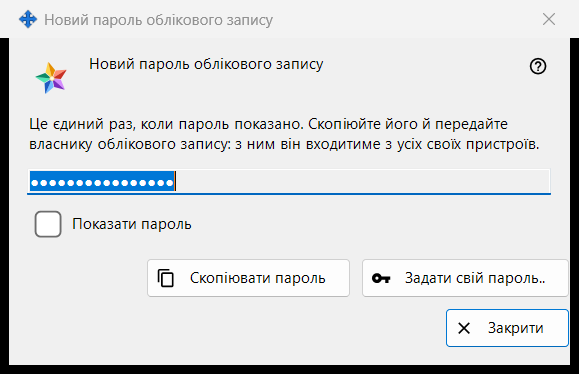
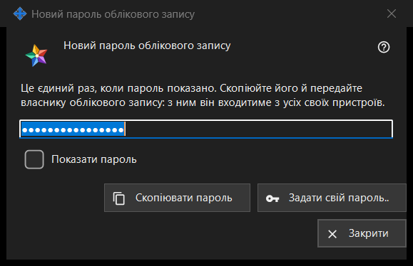

Новий пароль облікового запису
Призначення
Показує або запитує пароль облікового запису сервера обміну в трьох режимах: створений пароль, який програма щойно зробила, показується один раз (це режим на картинці); введений - вікно просить ваш власний пароль; збережений - показує пароль, що зберігається на цьому ПК. Вікно відкривається в налаштуваннях локального сервера обміну в Share Manager після «Додати обліковий запис..», «Скинути пароль..» або «Задати спільний пароль..», а також із запитань про пароль адміністратора.


Порядок дій
- Створений пароль: натисніть «Скопіювати пароль» (позначте «Показати пароль», щоб його прочитати), передайте пароль власнику облікового запису й натисніть «Закрити».
- Свій пароль: натисніть «Задати свій пароль..» або виберіть «Ввести пароль самому», введіть пароль, що відповідає правилу, і натисніть «Зберегти пароль».
- Збережений пароль: виберіть обліковий запис і натисніть «Показати пароль..».
Елементи вікна
Створений пароль (на картинці)
Заголовок «Новий пароль облікового запису». Вступний текст: «Це єдиний раз, коли пароль показано. Скопіюйте його й передайте власнику облікового запису: з ним він входитиме з усіх своїх пристроїв.» Поле приховане й доступне лише для читання; «Показати пароль» розкриває його тільки в цьому вікні. «Скопіювати пароль» кладе пароль у буфер обміну захищеним способом: до історії буфера Windows і до хмарного буфера він не потрапляє; вікно відповідає «Пароль скопійовано.». Під час закриття вікна поле очищається.
Закриття без копіювання
Якщо закрити створений пароль, який ви не скопіювали й не показували, програма запитає «Закрити, не скопіювавши пароль?» і додасть, що показати його знову не можна - потім його можна буде лише скинути. За замовчуванням вибрано «Ні». Якщо пароль зберігається на цьому ПК, запитання не ставиться.
Задати свій пароль..
Працює у вікні облікового запису, у вікні спільного пароля запрошення й у вікні пароля адміністратора: закриває це вікно, не використовуючи створений пароль, і знову запитує пароль, тепер той, який ви вводите самі, - він замінює створений.
Введений пароль
Заголовок «Пароль облікового запису», підпис «Пароль:», приховане поле та «Показати пароль». Підказка: «Не коротше 10 символів, із великою та малою латинською літерою і цифрою.» Коли ви вводите пароль, рядок попередження каже, чого бракує, наприклад «Потрібна хоча б одна цифра.». «Зберегти пароль» не приймає пароль, що не відповідає правилу; пароль, що відповідає, повертається вікну, яке його запитало, а останнє слово лишається за сервером.
Збережений пароль
У заголовку після слів «Пароль облікового запису» стоїть логін. Вікно показує пароль, що зберігається на цьому ПК, лише для читання, з «Показати пароль» і «Скопіювати пароль»; під час закриття нічого не запитується. Його відкриває «Показати пароль..» у списку облікових записів, яка з'являється, лише коли ввімкнено перемикач «Зберігати паролі облікових записів на цьому ПК». За замовчуванням він вимкнений; під час вмикання програма спершу запитує, а пароль потім зберігається зашифрованим для вашого облікового запису Windows, і будь-яка програма під ним може його прочитати. Пароль, заданий до ввімкнення перемикача, не зберігається.
Налаштування менеджера · Налаштування спільного доступу SFTP · Налаштування сервера обміну